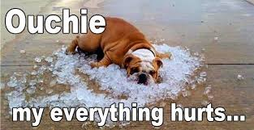

While many aches and pain are nothing to worry about,
certain types of pain may be a sign of serious trouble
People ask...
What illness makes your muscles sore?
Is pain that comes and goes serious?
What does it mean when your sore is out of nowhere?
When should I worry about soreness?
I Felt Better Yesterday,
And Worse Today...
What's Happening???

Why Am I Sore When I Wake Up?
Naturally some morning stiffness:P
Less blood flow to your muscles
Was feeling a bit hopeful yesterday
But...
I've been having a tough few weeks
